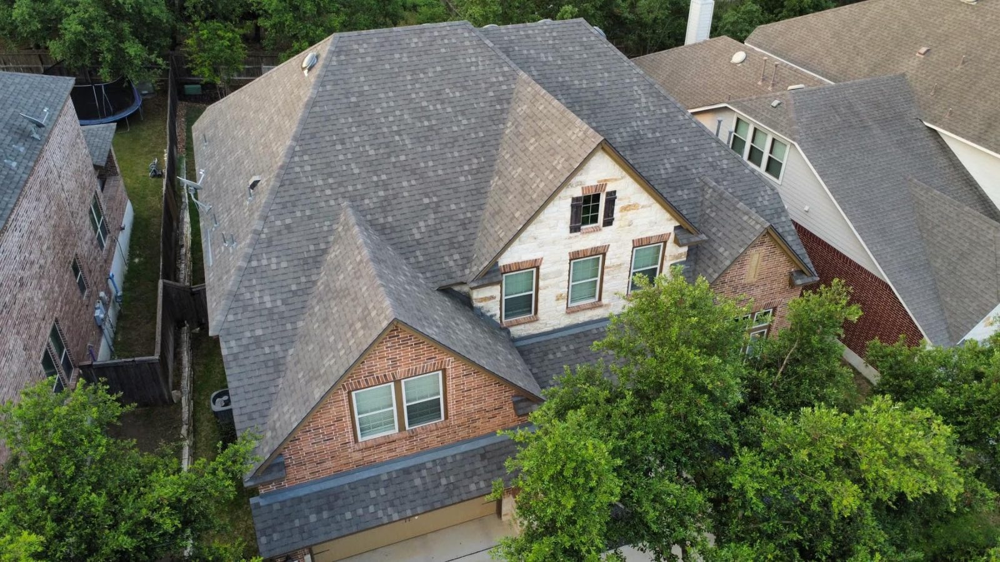

01
Roof repair
Not all damage is visible from the ground. The crew finds the leak and repairs it, often in one afternoon.
- Leaks
- Torn-off and re-decked sections
- Flashing and vent pipes


Roofing · New Braunfels, TX
Family owned New Braunfels roofer. Clear explanations, quick estimates, fair prices.
Request an estimateCall (830) 221-7910
Family owned since 2012
The crew explains the work, finds the problem and often finishes the repair in one afternoon.
Fully insured. Certified CertainTeed Master Craftsman.
Services
For homes in New Braunfels, San Antonio, Wimberley, Austin, San Marcos, Bulverde and Spring Branch.
Not all damage is visible from the ground. The crew finds the leak and repairs it, often in one afternoon.
Full roof replacement after hail damage or when the old roof is worn out, in shingle or standing seam metal.

Yearly roof maintenance starting at $150, plus gutter services, roof wash, attic insulation and skylight repair.

How it goes
Tell us where the roof leaks.
Someone comes out and explains the repairs needed.
The crew does the work, often within the week.
You hear what was done and why.
The work


Homeowners
4.7 · 275 Google reviews
Manuel has been very knowledgeable stuff, good explanation, knows what he is doing. Made a good job. Very very satisfied. Very happy with Manuel. Btw Toby has been very informative, gave great support, identified issues. Nice experience with both Toby and Manuel. Appreciate. Good luck to all of you.
Austin was very polite. He is young, but appears to know roofing construction. There were some communication problems between the technician and the business office. Once he got here the repair was done in one afternoon at a reasonable price. It rained all weekend and so far no leaks, so I am thinking Austin did a good job.
The employees were very professional and clearly explained everything they were doing. I will know more about the quality of work when the A/C company installs the heater. The price was higher than I expected.
About
Roof Repair and Leak Experts is family owned and operated, established in 2012. Their own line is: roofing is our heritage, quality is our tradition.
Roof replacement, repairs, maintenance, gutter services, blow-in attic insulation and skylight repair. Quick estimates, clear explanations, repairs that hold.

Hours & directions
1326 Hilltop Ridge, New Braunfels, TX 78132
Google lists the office as open 24 hours. Call or message to set up an estimate.